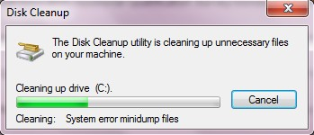
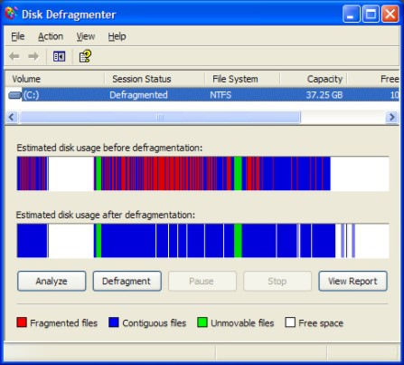
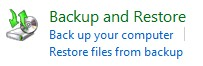
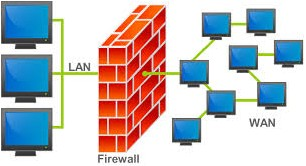
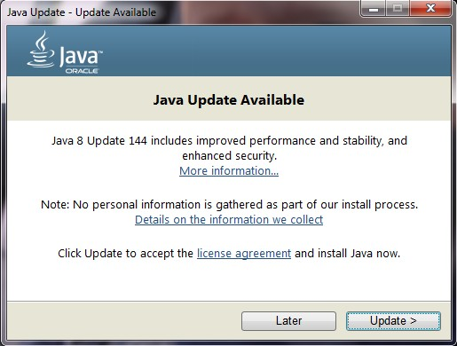

Unit 1: Understanding Computers
Activity 5: Maintenance & Security
Code.org: How the Internet Works Video series
 |
The following videos from code.org provide an overview of how the Internet works. We will watch a few videos from this series at the start of each activity.
|
|---|
Computer System Maintenance
As we depend more and more on computers for our everyday lives, it becomes critical that we learn how to properly maintain our computer. A well-maintained computer will run faster and more efficiently than one that is not maintained properly.
Maintenance Utilities
Most operating systems provides tools to maintain the performance and security of the computer. Below is an overview of these utilities & programs.
|
Disk Cleanup: helps remove unnecessary files from the computer. While it is important to do this manually, there are many files that are kept in folders that are hard to get to. This program will calculate how much empty space could be freed up by deleting these files that the computer (likely) no longer needs. |
 |
|---|
|
 |
Disk Defragmenter: speeds up the performance of the magnetic hard drive. When a file is saved to a magnetic disk, it is not always saved in the same physical location. Often files are saved to different parts of the disk and it can take longer for these files to load, since the spindle must move to multiple locations. Disk defragmenters work to piece these files back together to speed up load times. Many modern operating systems automatically perform this process periodically. However, SSD drives do not need this form of maintenance; read this article for details. |
|---|
|
Backup: maintains extra copies of important files so it can be recovered if the file is corrupted or accidentally deleted. In addition to backup utilities that store the files on the same computer (just a different location) it is also a good idea to keep a backup of important files on a different medium (CD/DVD, flash drive) AND an offsite backup (using a network service like Google Drive or Dropbox) |
 |
|---|
|
 |
Firewall: a system that blocks suspicious network traffic from the Internet or internal network. Firewalls can be provided by the operating system, installed as a separate piece of application software, or part of a router and/or modem. |
|---|
One last form of maintenance that should be mentioned is physical maintenance. Keeping your computer physically clean is also important. This involves keeping the keyboard free of debris, periodically removing dust from the interior fans with compressed air, and cleaning the screen and other peripherals when needed.
Software Updates
|
A software update (sometimes called a patch) is a file that contains fixes for software that is already installed on the computer. These could be bug fixes (fixing a situation where a program crashes, hangs, or displays some other undesirable behaviour) or security fixes (removing a vulnerability that has been discovered). Some updates contain new features; improved functionality over the previous version of the software. Both application software and operating system software should be updated as needed. |
 |
|---|
There are a few ways that updates can happen:
- Online updates - when an internet connection is available, the software does a check to see if there are updates available.
- Manual updates - some programs require the user to initiate the update process. This option is often available through the help menu.
One software update that is critical to maintain is virus definitions for antivirus software. This will protect your computer from new viruses as they are discovered.
 |
|---|
Malware
Malware is a software program that has been designed and created with malicious intent. Malware can corrupt or delete files on your computer, compromise your privacy, lead to identity theft, give a remote user unwanted access to your machine, or clog up network resources.
Virus: code that is attached to an executable file or other documents. It requires the user to run the executable or open the file in order for the virus code to execute. Once the virus has been activated, it can replicate itself and spread to other computers.
Worm: worms are different from viruses in that they don't need a host program to run and propagate; they are standalone programs that can run without any user activation at all.
Trojan Horse: the name comes from Greek mythology; it refers to a giant wooden horse inside which Greek soldiers hid during the Trojan War, in order to gain entrance to the city of Troy and win the war. A trojan horse disguises itself as a piece of legitimate software that entices the user to download and install it, but then the malicious code runs and enables cyber criminals access to your system and steal your personal data,
Spyware: monitors and tracks your activity on your computer, including websites you visit, usernames and passwords you type (referred to as keylogging), or any other valuable data, then sends it to a remote server. Spyware tends to 'piggyback' on free software; is can be installed when you click on a link to download and install a program you actually wanted.
Ransomware: once this gains access to your system, it locks your computer or encrypts your files, then demands money to release the control of your computer back to you. Ransomware is a relatively new form of malware; read more about it on this website.
Adware: similar to spyware, but instead of monitoring your activity it will redirect your browser to certain websites or populate your screen with pop up ads.
Malevolent Macros: a macro is a small piece of code that is meant to perform a particular task. Usually the task is one that is tedious, or done repeatedly, and the macro provides a shortcut to accomplishing that task. Many macros can be designed to run immediately when the file is opened, which allows malicious code to run without the user realizing it. Read more about malevolent macros on this blog.
Phishing: while not a piece of software, many consider these emails a form of malware. Phishing emails look like they come from a reputable source, such as a bank, online retailer or government office. The user is informed that there is a problem with their account and they must enter their account information to fix the problem. When the user clicks on the link provided in the email, they are taken to a different website that has been carefully crafted to look like the website the user expects; only the information is sent to cyber criminals instead.
 |
Want to learn more? Check this out: |
|---|
Evidence of Learning
Maintenance and Security Task
Once you have read the lesson and watched the videos above, head to the D2L on the Activity 5 card in Hapara and be prepared to share a bit of advice that you have about keeping your computer in good shape. Your words of wisdom could include (but are not limited to):
- A program or service that can help make these maintenance tasks easier? (What do YOU use as anti-malware software?)
- A product that helps to keep your computer clean? (Feel free to provide a link to the product or website)
- A lesson about computers that you (or someone you know) had to learn the hard way (lost the english essay the night before it was due ... should've made a backup ...)
This is meant to be a very informal assignment; feel free to comment on other people's ideas as well! Every student must contribute at least one idea, suggestion, anecdote, program or product to the discussion.